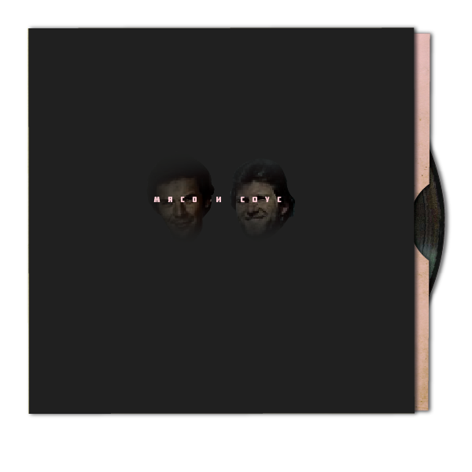
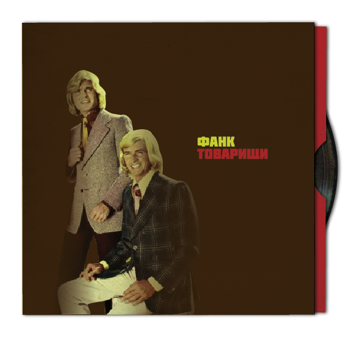

I've started putting together the world in which the band will ocupy in the interactive story. Before I could make informed image choices I had to nail down a script. Probably the least enjoyable part of the project up to now, it seemed to take too long to put it together. I was recommended a book to aid this surprisingly difficult task. The book is called 'How To Write A Movie in 21 Days' by Viki King. In it, the author explains how to get the ideas onto paper before planning out key moments using index cards, after this it's a case of joining the dots in between the key points. Most helpful.
After the bulk of the story was formulated I set out to create the scenery. The visual style for the interactive story was created quite a while back and is prevalent in the later pages of this journal. The process starts with an image, for example a building. The image will then be clipped out in Photoshop, before being printed onto acetate. Once printed, the image is then cut out with a ruler and scalpel and then scanned. The scanned image is then opened in Photoshop and clipped out before being saved as a PNG.
The formulation of the script also gave birth to new characters for the story, a bunch of bands that were associated with our main characters during their heyday, at the height of the Baltic Funk Movement.
 